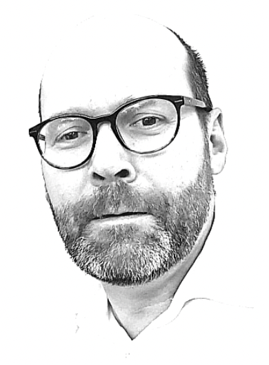

Kreativität
Kreative Lösungen zu finden ist mein Metier; es macht mir Spass, Neues auszuprobieren und alte Pfade zu verlassen.
Stefan Schlicker
HTML CSS JavaScript MongoDB Mongoose 4DX OKR Agile Jira Software Trello JAMStack BEM SASS SCSS A11y (Barrierefreiheit) React npm git Github UX UI
Kreative Lösungen zu finden ist mein Metier; es macht mir Spass, Neues auszuprobieren und alte Pfade zu verlassen.
Wissen veraltet schnell, deshalb lerne und lese ich viel. An das Supertalent, das alles kann, glaube ich nicht - wenn etwas leicht aussieht, steckt dahinter in der Regel harte Arbeit
Jahrelange Erfahrung in Kommunikation. Dazu ein klares Verstädnis davon, wie Wirtschaft funktioniert und wie Unternehmen ticken.
Bücher lesen oder Onlinekurse sind wirklich eine gute Quelle, um Web Development zu verstehen. Aber um es wirklich zu lernen, muss man sich die Hände schmutzig machen.
Deshalb arbeite ich an einer Website zum Thema "Marketing mit Video". Kann sein, dass daraus auch ein Startup wird. Es geht mir aber vor allem darum, die verschiedenen Techniken zu testen.
Ein Bootcamp der neuen fische soll mir nun den letzten Schliff geben - insbesondere bei agilen Methoden (Clean code, Pair Programm, Testing) und der Arbeit im Team.